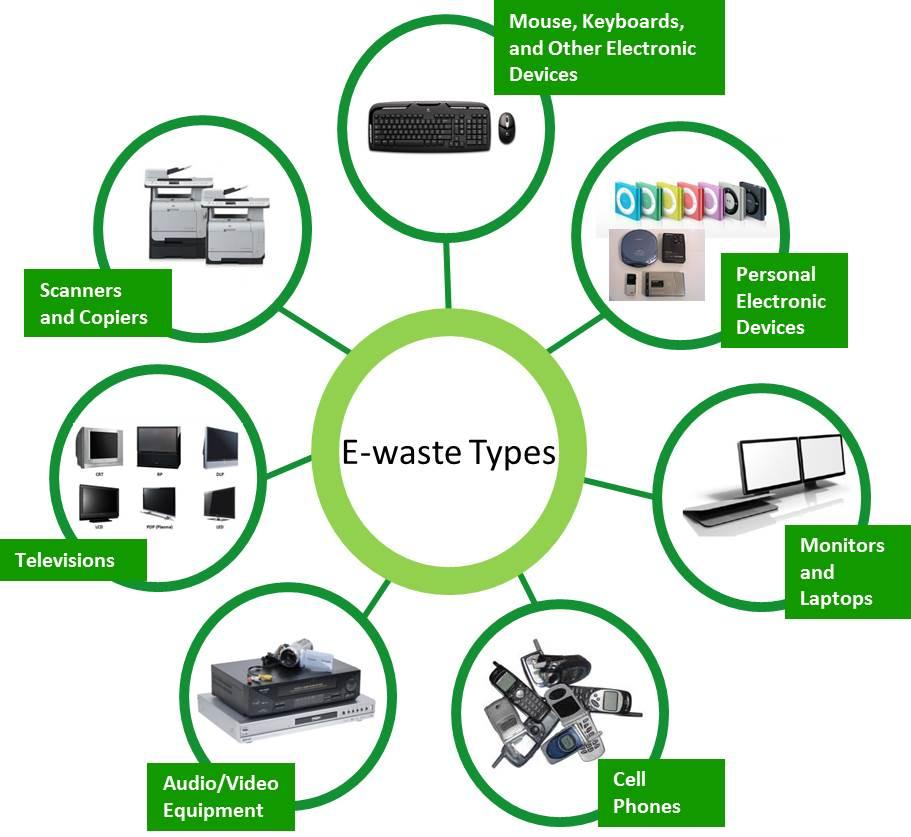
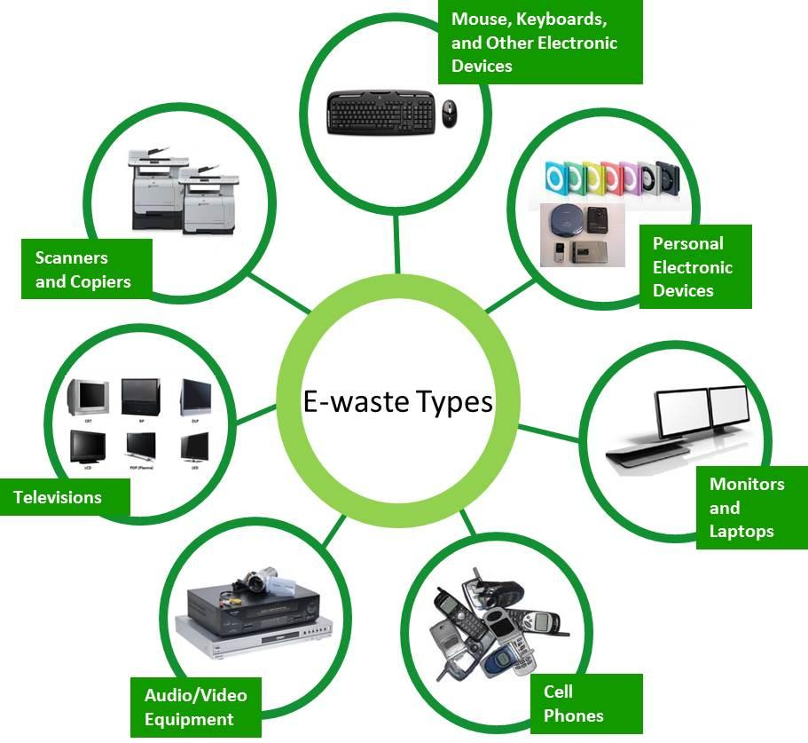

Technology changes day by day due to which a large amount of electronic or electrical devices are turning into waste. Some of the common e-waste elements are mobile phones, computers, laptops, hard drives, fans, microwaves, DVD, printers, lamps, etc.
What we do
Our technology developed and designed production lines & equipments to recyle the E-wastes and Li-batteries which are harmful for earth.By recycling the product we make new products like new batteries and many more.We are recyling the waste at affordable price and easy recovery of economical products.
Raw materials
Global e-waste generated in 2019 is 53.6 million tonnes; and T he value of raw materials in the global generation of e-waste in 2019 is approximately US$57 billion.
The main souces are,
 

Process
These toxic materials, and in particular heavy metals such as mercury and cadmium, can cause damage to ecosystems, build up in food chains, and have direct and immediate effects on human health.
The recycling process happens through several steps.They are,
Final Product
Do you want to donate us and be a member of our community? Register yourself in the given box below.
Recycle the waste and save earth
OUR TEAM